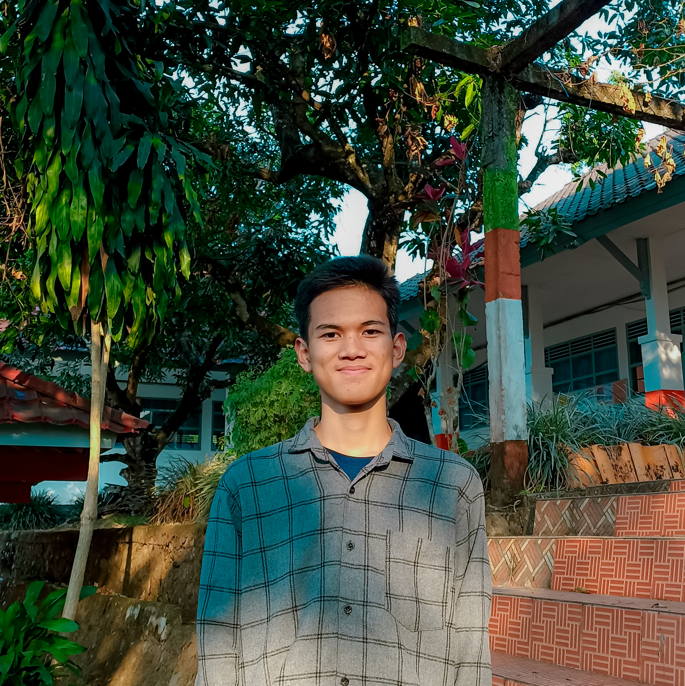

I'm Haerul Algifar,
I am a technology developer who bridges the gap between beautiful design and robust functionality. With a strong foundation in both front-end and back-end technologies, I am passionate about turning complex ideas into seamless, user-centered digital experiences. My interest in UI/UX design and IoT drives me to continuously learn and create innovative solutions.